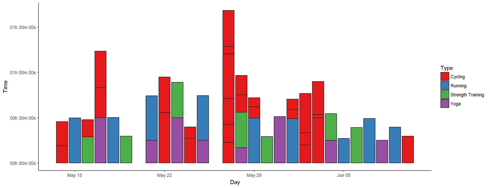
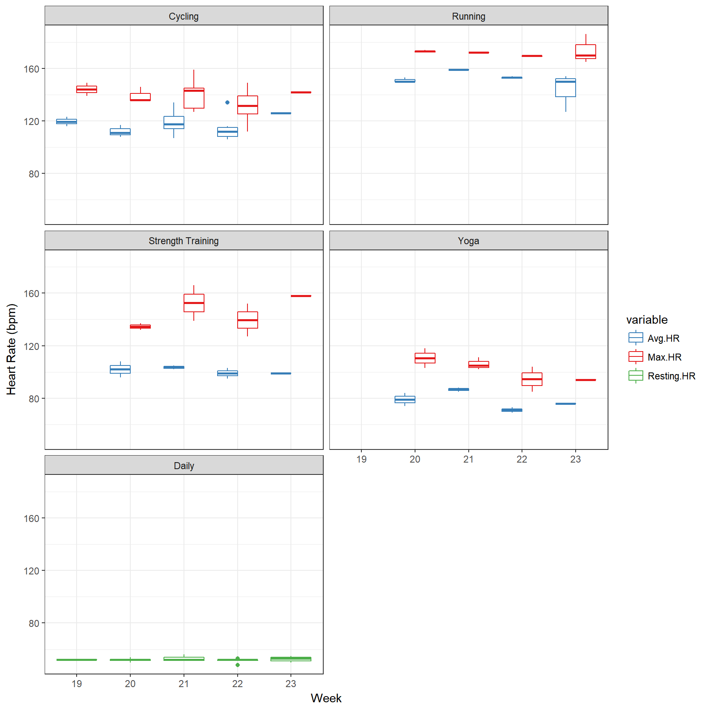
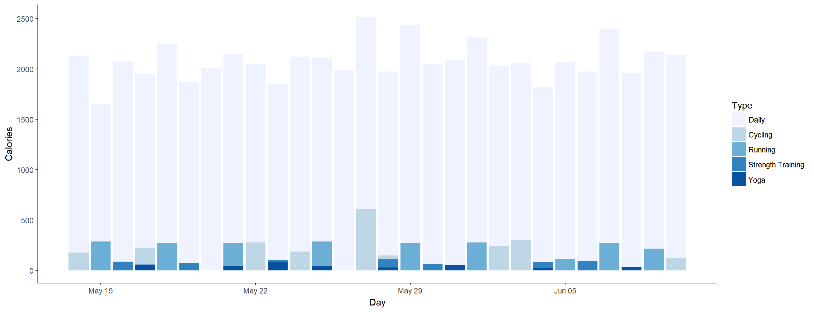
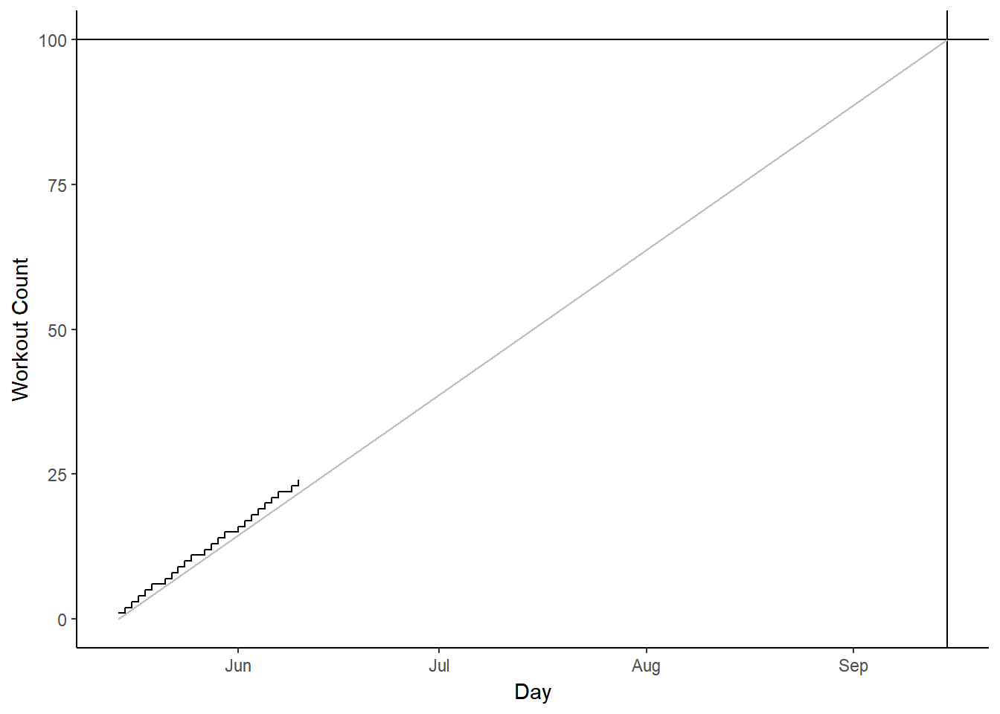

# read in data
week1 <- read.table("Week1.csv", header = TRUE, sep = ",", na.strings = c("NA",
"--", ""))
week2 <- read.table("Week2.csv", header = TRUE, sep = ",", na.strings = c("NA",
"--", ""))
week3 <- read.table("Week3.csv", header = TRUE, sep = ",", na.strings = c("NA",
"--", ""))
week4 <- read.table("Week4.csv", header = TRUE, sep = ",", na.strings = c("NA",
"--", ""))
# combine data
data <- rbind(week4, week3, week2, week1)
# convert time/date objects
data$Start <- as.POSIXct(data$Start, format = "%a, %d %B %Y %H:%M")
data$Time <- times(data$Time)
# remove morning exercise
dataf <- data[!data$Type == "Other", ]
# convert exercise type to factor and reorder for plotting
a <- recode(as.numeric(as.factor(dataf$Type)), "1=1; 2=5; 3=2; 4=3; 5=4")
dataf$Types <- reorder(dataf$Type, a)
# first look
summary(data)
datafI’m tracking my workouts and other “fitness” stats with Garmin’s vivosmart HR+, so I have some data to play with in this project. They include activity names and types, starting times of course, as well as distance, time (duration), heart rate and calorie burn data. I also added daily overview data manually to what I could download from Garmin.
While the weekly posts will discuss my activities in a bit more detail, the purpose of this page is to collect and visualise all data for a general, visual overview of my (new) exercise habits.
# extract day from activity start
dataf$Day <- as.Date(dataf$Start)
# ignore daily data for plotting
datas <- subset(dataf, !Type == "Daily")
p1 <- ggplot(datas, aes(x = Day, y = Time, fill = Type)) + geom_bar(stat = "identity",
colour = "black") + scale_fill_brewer(palette = "Set1")
p1 <- p1 + scale_y_chron(labels = date_format("%Hh %Mm %Ss"))
p1 <- p1 + theme_classic()
p1
# melt HR data
HRdata <- melt(dataf, id.vars = c("Activity", "Types", "Day"), measure.vars = c("Avg.HR",
"Max.HR", "Resting.HR"))
# group by week
HRdata$Week <- format(HRdata$Day, format = "%W")
p2 <- ggplot(data = HRdata, aes(x = factor(Week), y = value, colour = variable)) +
geom_boxplot() + scale_colour_manual(values = c("#377EB8", "#E41A1C", "#4DAF4A"))
p2 <- p2 + facet_wrap(~factor(Types), nrow = 3)
p2 <- p2 + theme_bw() + labs(y = "Heart Rate (bpm)", x = "Week")
p2
# reorder types for this plo reorder types for this plot
b <- recode(as.numeric(as.factor(dataf$Types)), "1=2; 2=3; 3=4; 4=5; 5=1")
dataf$Types <- reorder(dataf$Type, b)
# sum up calories per exercise type per day
datac <- dcast(dataf, Day ~ Types, sum, value.var = "Calories")
datacm <- melt(datac, id.vars = "Day")
colnames(datacm) <- c("Day", "Type", "Calories")
p3 <- ggplot(datacm, aes(x = Day, y = Calories, fill = Type)) + geom_bar(stat = "identity",
position = "identity") + scale_fill_brewer()
p3 <- p3 + theme_classic()
p3
# calculate workout count (one per day, if strength, running or cycling)
datac$Count <- ifelse(datac$Cycling > 0 | datac$Running > 0 | datac$`Strength Training` >
0, 1, 0)
# x axis limits
lims <- as.Date(c("2017-05-14", "2017-09-15"))
p4 <- ggplot(datac, aes(x = Day, y = cumsum(Count))) + geom_step()
p4 <- p4 + scale_x_date(limits = lims) + ylim(c(0, 100))
p4 <- p4 + geom_hline(yintercept = 100) + geom_vline(xintercept = as.numeric(as.Date("2017-09-15")))
p4 <- p4 + geom_line(data = data.frame(x = lims, y = c(0, 100)), aes(x = x,
y = y), col = "grey")
p4 <- p4 + theme_classic() + labs(y = "Workout Count", x = "Day")
p4
24/100 workouts done, or better, I worked out on 24 days so far, out of 28 days since #SummerPain started.
kable(ddply(dataf, .(Type), summarise, duration = sum(Time), calories = sum(Calories)),
format = "html", table.attr = "style='width:30%;'")| Type | duration | calories |
|---|---|---|
| Cycling | 07:13:25 | 2535 |
| Daily | NA | 58218 |
| Running | 04:07:51 | 2277 |
| Strength Training | 02:20:47 | 611 |
| Yoga | 02:40:46 | 372 |